-
Folder with FreeCAD's "FreeCAD.so" or "FreeCAD.dll" File Folder to Store Generated 3D Files
- X Rod
-
Top X Rod Diameter Bottom X Rod Diameter Length of the Shorter Rod
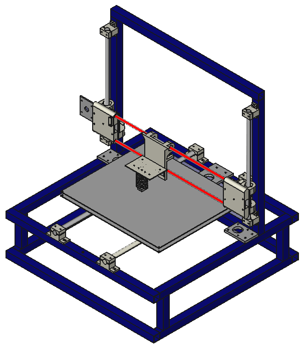
-
- Y Rod
Left Y Rod Diameter Right Y Rod Diameter Length of the Shorter Rod
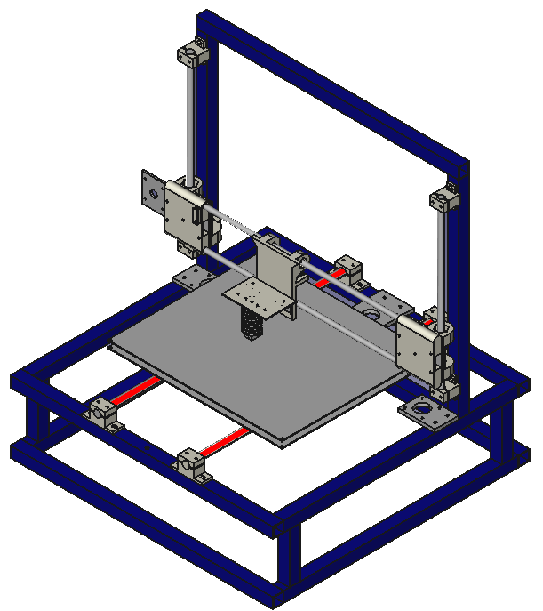
Right Z Rod Diameter Left Z Rod Diameter Length of the Shorter Rod
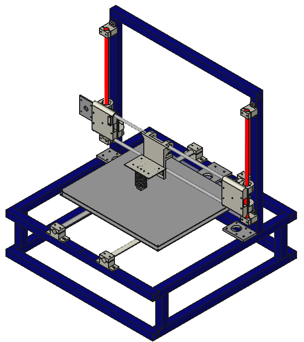
Lead Screw Diameter
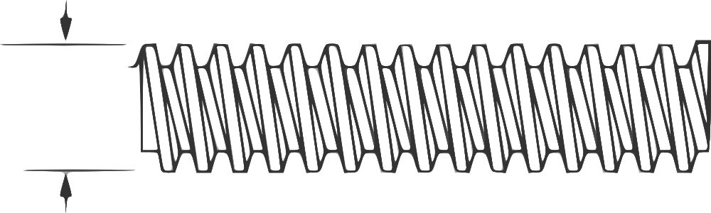
Frame Width Frame Height Frame Wall Thickness
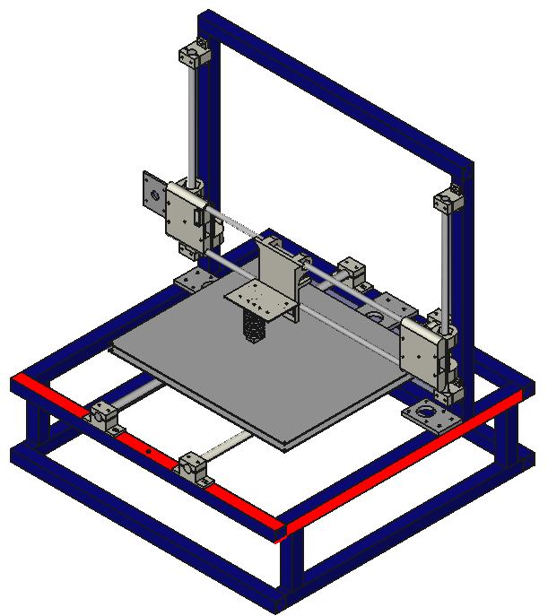
Printed Parts Mounting Hole Diameter Frame Mounting Bolt Diameter Frame Mounting Bolt Head Diameter Frame Mounting Bolt Head Thickness
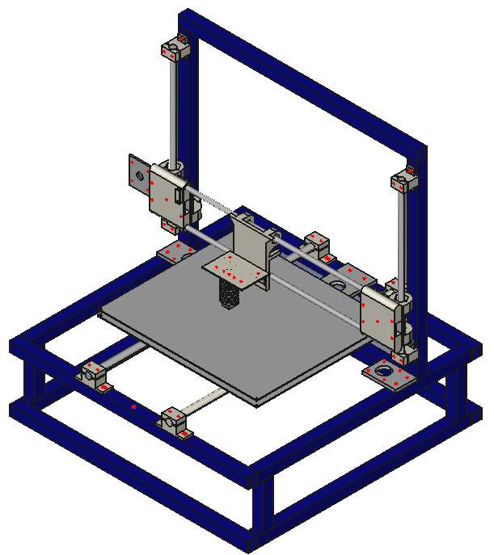
Diameter of Mounting Bolts Thickness of the Heated Build Plate
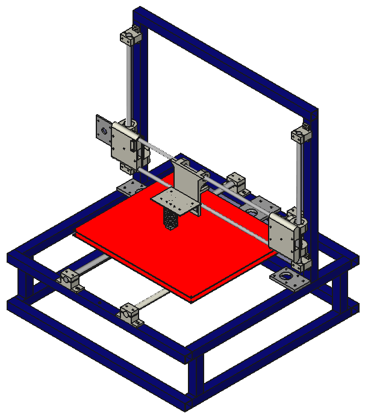
The Width of the Print Bed Bushing Support Print Bed Busing Holder Max Face to Face

-
Thickness of the Print Bed Support
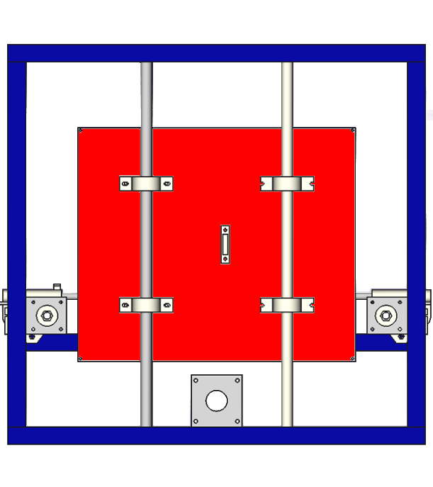
Diameter of the X Rod Clamp Idler Hole
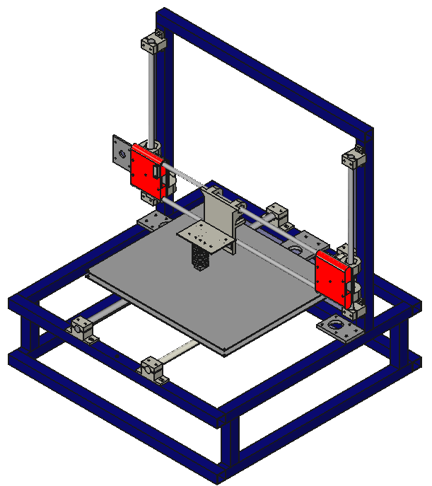
Diameter of the Idler Hole (As Apposed to the Printed Idler Hole which is Larger) X Motor Mount Thickness X Motor Mount Width Number of Mount Holes on the X End Motor Plate Distance from shaft to Mount Holes Diameter for Motor Mount Hole Distance between Motor Mount Holes and the Edge of the plate The Diameter of the X Motor Pully
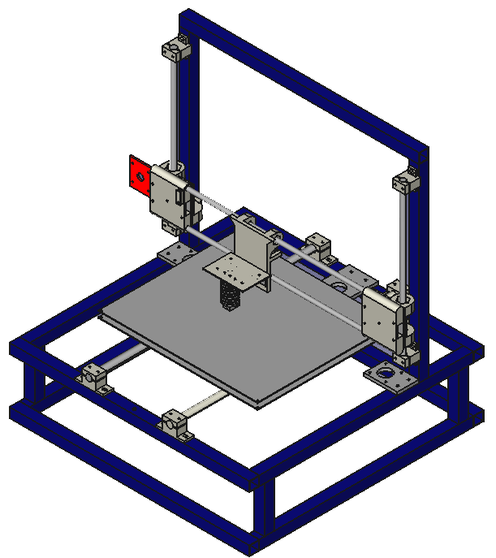
X End Z Rod Holder Thickness Horizontal Distance From Edge of X End Z Rod Holder to the Edges of Mounting Holes The Vertical Distance from the Edge of the Largest X Rod to the Edges of the Mounting Holes Thickness of the Z Offset Nut Distance from shaft to Mount Holes The Face to Face Distance of the Z Offset Nut The Hole diemter of the Z Offset Bolt
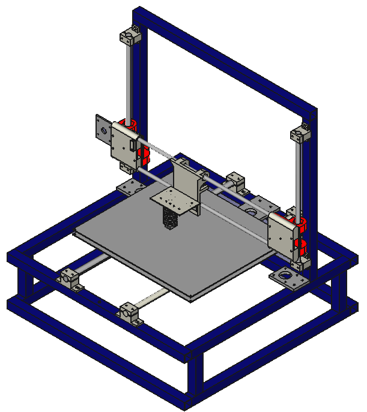
Number of Motor Mounting Holes Distance Between the Motor Shaft and the Mounting Holes Diameter of the Mounting Holes Minimum Space Between the Edge of the Motor Mounting Holes and the Edge of the Plate Thickness of the Z Motor Mount Plate Width of the Z Motor Mount Plate Motor Mount Hole diameter
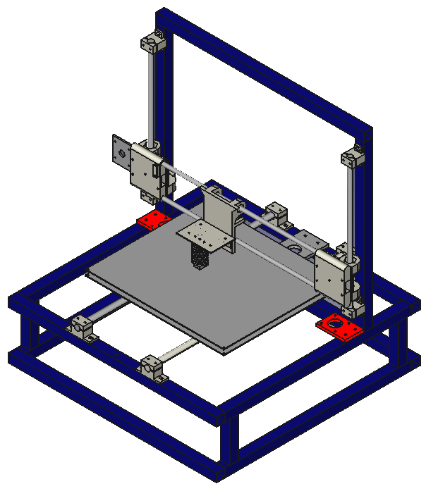
Thickness of the Y Motor Mount Plate Y Motor Mount Width Number of Mount Holes on the Y Motor Mount Distance from shaft to Mount Holes Diameter for Motor Mount Mounting Holes Diameter for Motor Mount Shaft Hole Distance between Motor Mount Holes and the Edge of the plate The Diameter of the Y Motor Pully
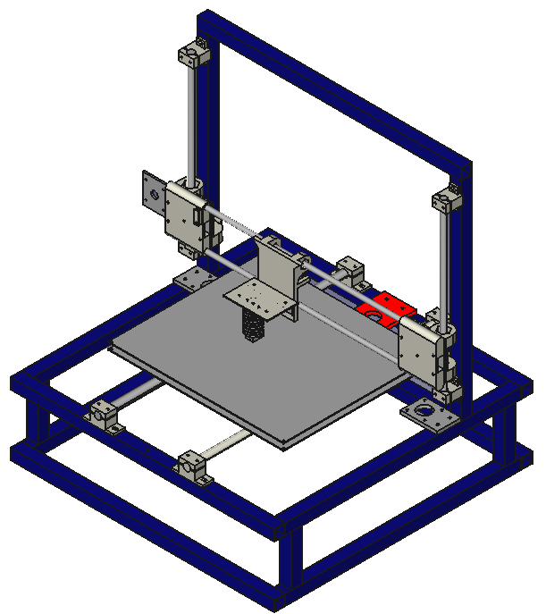
Thickness of Extruder Mount Plate Diameter of Hot End Mounting Holes
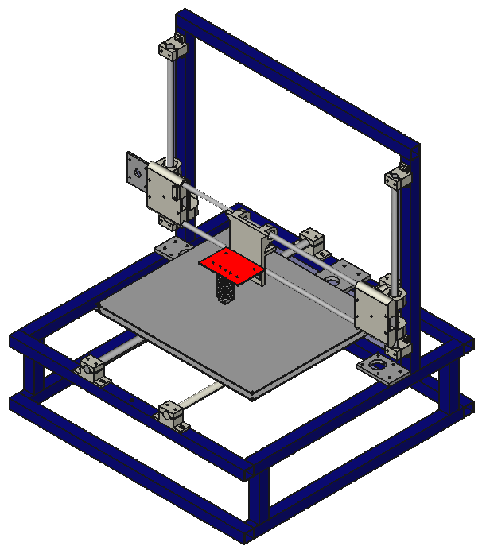
Width of Angle Iron Used (Also known as L-Stock, Angle and Right Angle Stock) Thickness of Angle Used
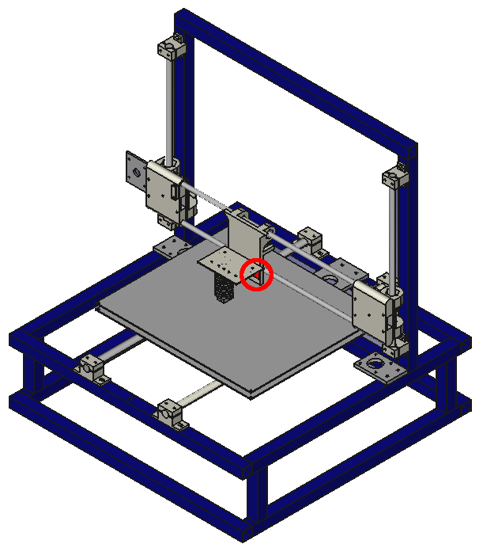
Width of Extruder Body Required Depth for Mounting the Front Edge of the Extruder Body to Back Most Part of the Extruder Distance Between the Extruder's Mounting Holes Diameter of the Extruder Mounting Holes Diameter of the Extruder Filament Hole Distance from the Outer Edge of the Extruder to it's Center Line (See Second Picture)
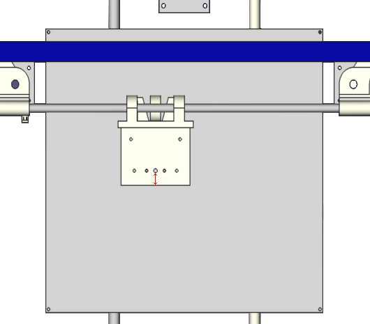
-
Width of Extruder Body Diameter of the Extruder Body Diameter of the Teflon Barrel Liner Number of Cooling Fins (Not Including the Top and Bottom Faces) Thickness of the Top and Bottom Faces Thickness of Metal Around the Barrel Liner Space Between Fins Diameter of Mounting Holes for Extruder Barrel (A 2.5mm Hole Would Be Tapped To 3mm) Depth of Mounting Holes Center to Center Distance Between the Hot End Mounting Holes
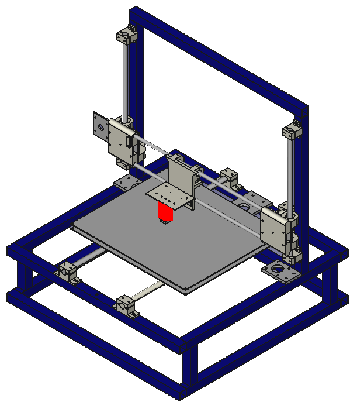
-
Height of Nozzle Body Width of Nozzle Body Depth of Nozzle Body Diameter of Heater Resistor Distance Between the Axis of the Resistor and the Outer Edge of the Heater Block Diameter of Thermistor Bead Depth of Thermistor Mount Hole Diameter of Thermistor Retainer Screw Depth of Thermistor Retainer Hole Diameter of Nozzle Diameter of Nozzle Base Diameter of the Step Down from the Barrel Liner (A Bit Larger than the Filament Diameter) Distance from Tip of the Setp Hole to the Tip of Nozzle Drill Point Angle of Drill Bits Used Diameter of the Flat Surrounding the Nozzle Hole Distance from the Lower Edge of Heater Block to the Center of Thermistor Hole Distance from the Outer Edge of the Heater Block to the Center of the Retainer Hole.
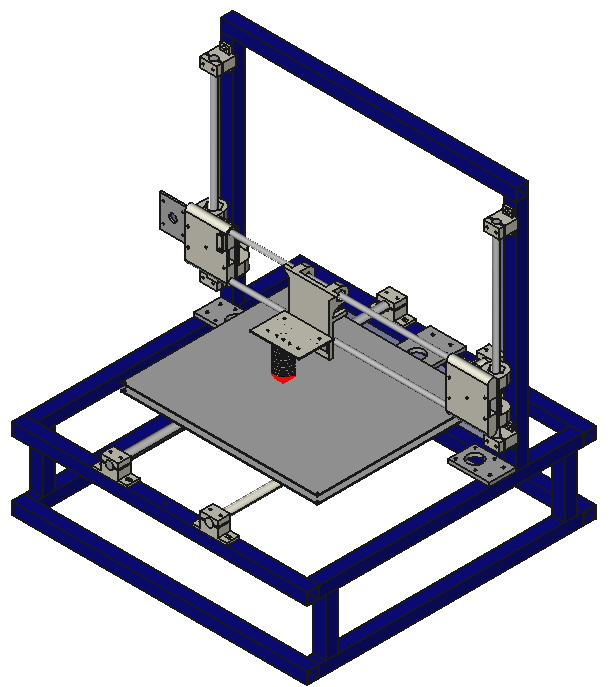
Diameter of Hole for Y Belt Idler
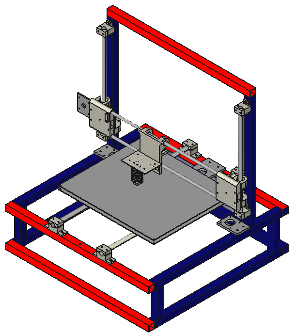
Length of Frame Spacers Distance Between the Edge of the Side Bar to the Edge of the Frame Spacer
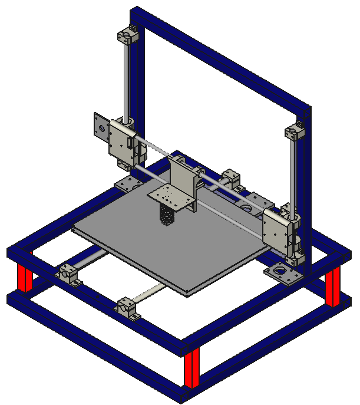
Height of End Stop Body Distance Between the Contact Strips (Surface to Surface not Center to Center) Width of the Channels for the Metal Contact Strips Depth of the Channels for the Metal Contact Strips Minimum Distance Between the Edge of a Feature (Hole or Channel) and the Edge of the Endstop Thickness of Endstop Cap
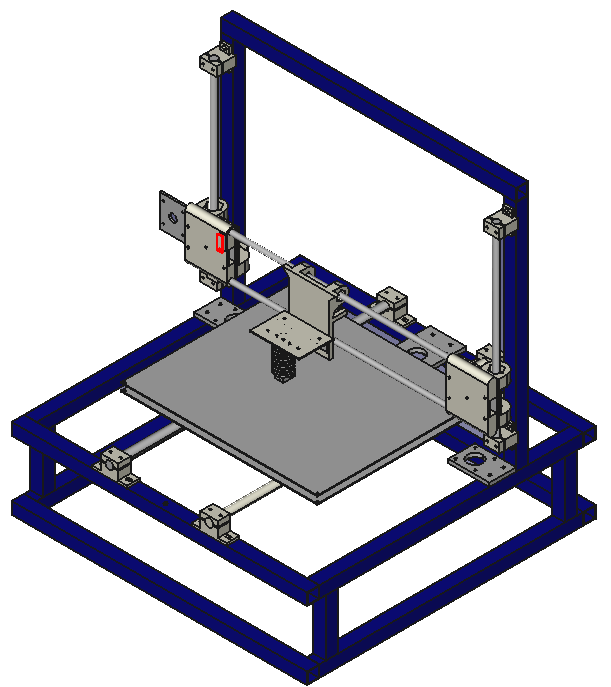
Width of the Jog Used to Trap Contacts
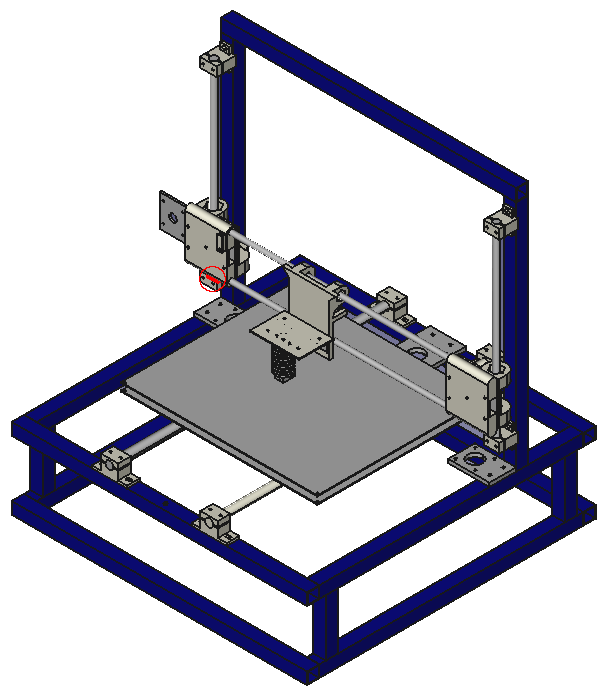
Length of the Lead Screw Couplers (Vertical Axis) Diameter of lead screw cuttout (Just a bit larger than the lead screw Diameter) Diameter of motor shaft cuttout (Just a bit larger than the shaft Diameter)
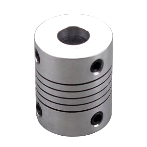
Enable Width of Printer Build Plate Height of Printer Build Plate Precision Parts Spacing Spacing of the Brute Forcing Angle of the Brute Forcing
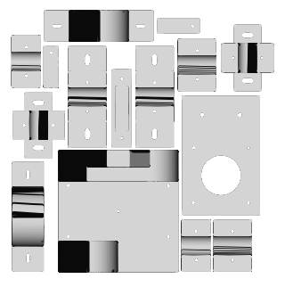
Enable Slic3r Configuration
Zip File Name